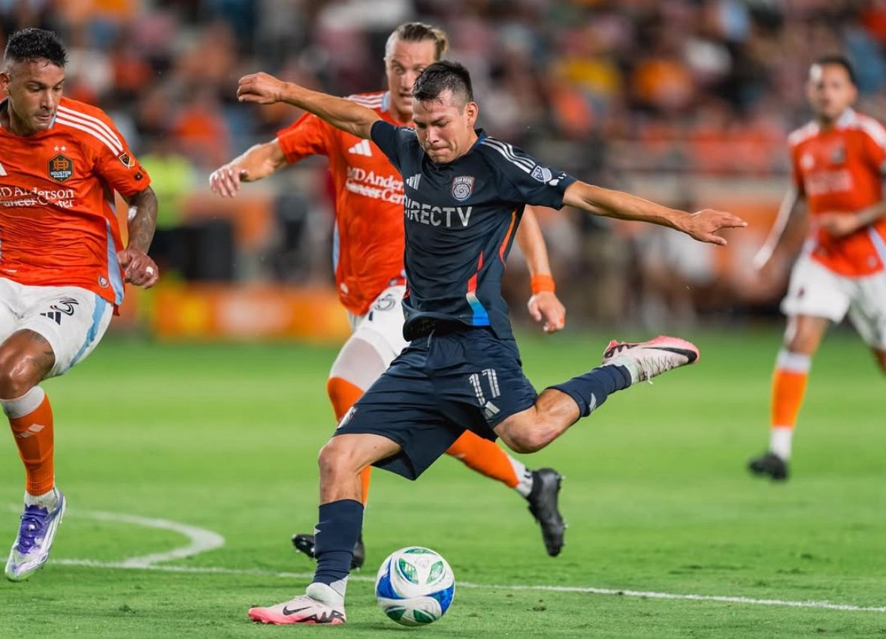

Hirving “Chucky” Lozano vive una etapa complicada tanto a nivel deportivo como profesional, en un momento decisivo de su carrera y con el Mundial de 2026 cada vez más cerca.
Futuro incierto en su club
El atacante mexicano ha quedado fuera de los planes de su actual equipo, situación que ha generado incertidumbre sobre su continuidad y su próximo destino. A pesar de haber sido una pieza importante en etapas recientes, la directiva optó por tomar otro rumbo en su proyecto deportivo, priorizando el funcionamiento colectivo.
Decisiones deportivas y salariales
Uno de los principales obstáculos para definir su futuro es el aspecto económico. El alto salario de Lozano ha complicado posibles negociaciones, especialmente con clubes de la Liga MX, que ven difícil ajustarse a sus pretensiones financieras. Esta situación ha limitado sus opciones y prolongado la falta de definición.

A sus 30 años, Lozano busca un proyecto que le garantice competitividad.Impacto en la Selección Mexicana
La falta de minutos y continuidad representa un problema adicional para Lozano en sus aspiraciones de mantenerse como una opción real para la Selección Mexicana. Con la Copa del Mundo en puerta, el delantero necesita estabilidad y ritmo competitivo para seguir siendo considerado.
Un desafío personal
A sus 30 años, “Chucky” enfrenta uno de los mayores desafíos de su carrera: reinventarse, encontrar un proyecto que confíe en él y demostrar que aún puede marcar diferencia al más alto nivel.
El desenlace de esta situación será clave no solo para su futuro inmediato, sino también para su legado dentro del futbol mexicano. ¿Dónde terminará el 'muñeco diabólico'? Amanecerá y veremos.